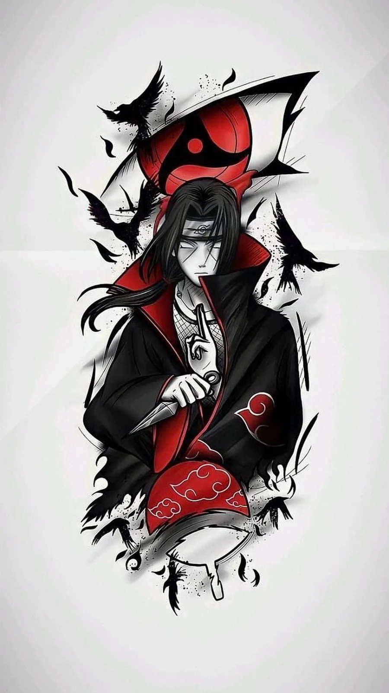
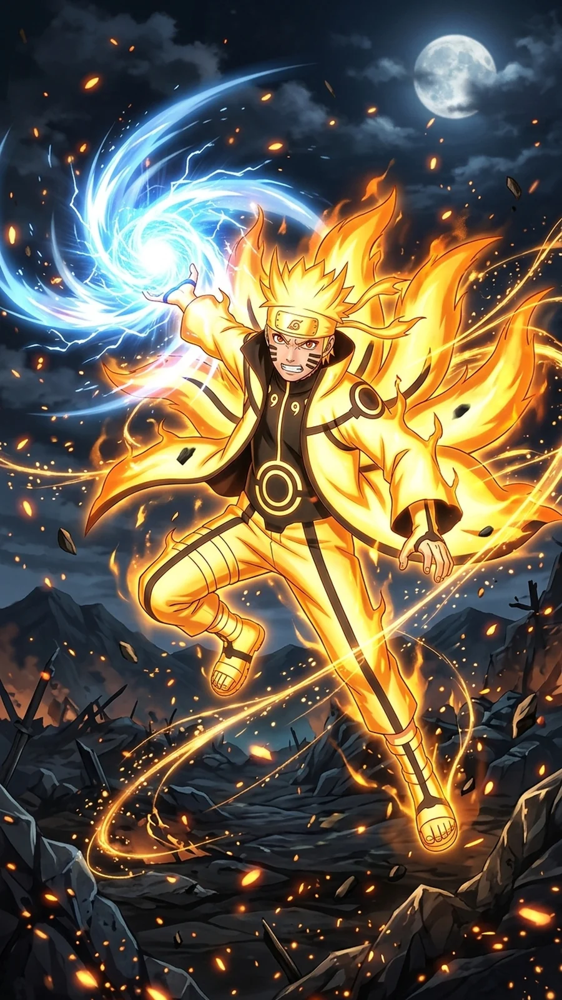

Naruto Shippuden Part 12: Seasons 20-21 (Episodes 414-479) - Every Episode Explained

Last updated: 20 October 2026
This is Part 12 of the complete Naruto Shippuden episode-by-episode guide, covering Seasons 20 and 21 - Episodes 414 to 479. This is the end of the war, the arrival of Kaguya, and finally the Naruto versus Sasuke fight the entire series was built toward.
At a glance
- Episodes: 414-479 (66 episodes)
- Season 20: The Fourth Great Ninja War: The End - episodes 414-443 - canon + dream filler
- Season 21: Jiraiya Ninja Scrolls / Kaguya / The Final Battle - episodes 444-479 - canon + flashback filler
- Aired: 28 May 2015 - 13 October 2016
- Season 20 score: 8.5/10 · Season 21 score: 8/10
This is the longest part in the guide, because Shippuden's final stretch is enormous. It contains some of the best episodes in the franchise and also a very long stretch of dream-world filler. The rule is simple: watch the canon, read the summaries for the dreams.
Every episode explained
Episode 414: On the Brink of Death
Naruto and Sasuke are both on the edge of death as Madara closes in.
Note: The war's lowest point.
Episode 415: The Two Mangekyo
The two Mangekyo Sharingan are brought together.
Note: Big lore.
Episode 416: The Formation of Team Minato
A flashback to the formation of Team Minato.
Note: Kakashi's origin again, but from a different angle.
Episode 417: You'll Be My Backup
Obito's promise to Kakashi is revisited.
Note: Tragic in hindsight.
Episode 418: The Blue Beast vs. Six Paths Madara
Might Guy takes on Madara alone.
Note: One of the best fights in the entire series.
Episode 419: Papa's Youth
Guy's father and the Eight Inner Gates are explained.
Note: Makes Guy's fight land harder.
Episode 420: The Eight Inner Gates Formation
Guy opens the final gate.
Note: Legendary.
Episode 421: The Sage of Six Paths
Naruto and Sasuke meet the Sage of Six Paths.
Note: The biggest lore episode in the series.
Episode 422: The Ones Who Will Inherit
The Sage explains what he is passing on.
Note: Setup for the finale.
Episode 423: Naruto's Rival
Sasuke's role is defined against Naruto's.
Note: Thematic.
Episode 424: To Rise Up
Naruto and Sasuke rise again with new power.
Note: Hugely satisfying.
Episode 425: The Infinite Dream
The Infinite Tsukuyomi is activated.
Note: Everything goes wrong at once.
Episode 426: The Infinite Tsukuyomi
The world is trapped in the dream.
Note: Bleak.
Episode 427: To the Dreamworld
The dream worlds are explored.
Note: Surreal.
Episode 428: Where Tenten Belongs
Tenten's dream world is shown.
Note: Filler, but charming.
Episode 429: Killer B Rappuden: Part 1
A comedy two-parter starring Killer B.
Note: Pure fun.
Episode 430: Killer B Rappuden: Part 2
The Killer B comedy continues.
Note: Light relief.
Episode 431: To See That Smile, Just One More Time
A dream-world episode built around a single wish.
Note: Sentimental.
Episode 432: The Loser Ninja
A dream world explores what could have been.
Note: Bittersweet.
Episode 433: The Search Mission
A dream-world story about a search.
Note: Filler.
Episode 434: Team Jiraiya
Jiraiya's team is revisited in a dream.
Note: Nostalgic.
Episode 435: Order of Priority
A dream world tests the characters' priorities.
Note: Decent.
Episode 436: The Masked Man
The masked man's identity is revisited.
Note: Lore.
Episode 437: The Sealed Power
A sealed power is released.
Note: Action.
Episode 438: The Rules or a Comrade
The old question of rules versus comrades returns.
Note: Thematic.
Episode 439: The Child of Prophecy
The prophecy about Naruto is revisited one last time.
Note: Payoff.
Episode 440: The Caged Bird
Neji and Hinata's clan history is revisited.
Note: Emotional.
Episode 441: Returning Home
A dream world takes a character home.
Note: Warm.
Episode 442: The Mutual Path
Two characters' paths are compared.
Note: Thematic.
Episode 443: The Difference in Power
The gap in power between the heroes and the enemy is shown.
Note: Tense.
Episode 444: Leaving the Village
A flashback arc begins, set before the original series.
Note: Filler, but good.
Episode 445: Pursuers
The pursuit of a character's past begins.
Note: Solid.
Episode 446: Collision
Two forces collide.
Note: Action.
Episode 447: Another Moon
A different kind of moon is introduced.
Note: Lore.
Episode 448: Comrade
The theme of comradeship is explored.
Note: Thematic.
Episode 449: The Shinobi Unite
Shinobi from different places unite.
Note: Good.
Episode 450: Rival
A rivalry is established.
Note: Setup.
Episode 451: Birth and Death
A birth and a death frame the episode.
Note: Emotional.
Episode 452: The Genius
A character's genius is examined.
Note: Character work.
Episode 453: The Pain of Living
The cost of survival is explored.
Note: Heavy.
Episode 454: Shisui's Request
Shisui Uchiha's story is told.
Note: Important lore.
Episode 455: Moonlit Night
A quiet night sets up a tragedy.
Note: Atmospheric.
Episode 456: The Darkness of the Akatsuki
The Akatsuki's origins are shown.
Note: Excellent backstory.
Episode 457: Partner
The bond between Akatsuki partners is explored.
Note: Good.
Episode 458: Truth
The truth about a long-running mystery is revealed.
Note: Payoff.
Episode 459: She of the Beginning
Kaguya Ootsutsuki is introduced.
Note: A shocking new villain.
Episode 460: Kaguya Ootsutsuki
Kaguya's power and origins are shown.
Note: The final boss.
Episode 461: Hagoromo and Hamura
Kaguya's sons and their fight against her are told.
Note: Foundational lore.
Episode 462: A Fabricated Past
The history of the ninja world is questioned.
Note: Big.
Episode 463: The No. 1 Most Unpredictable Ninja
Naruto's defining trait becomes the key to victory.
Note: Perfect.
Episode 464: Ninshu: The Ninja Creed
The original purpose of ninjutsu is explained.
Note: Thematic payoff.
Episode 465: Ashura and Indra
The sons of the Sage and their endless conflict are shown.
Note: The series' deepest lore.
Episode 466: The Tumultuous Journey
Ashura's journey is told.
Note: Good.
Episode 467: Asura's Decision
Ashura chooses his path.
Note: Thematic.
Episode 468: The Successor
The question of succession is answered.
Note: Payoff.
Episode 469: A Special Mission
A special mission frames the episode.
Note: Solid.
Episode 470: Connecting Thoughts
The idea of connecting people runs through the episode.
Note: Thematic.
Episode 471: The Two of Them... Always
Naruto and Sasuke's bond is centred.
Note: Emotional.
Episode 472: You Better...
A promise is finally made.
Note: Payoff.
Episode 473: The Sharingan Revived
The Sharingan returns at a crucial moment.
Note: Big.
Episode 474: Congratulations
A celebration after so much loss.
Note: Warm.
Episode 475: The Valley of the End
Naruto and Sasuke return to where it all began.
Note: The perfect setting for the finale.
Episode 476: The Final Battle
Naruto versus Sasuke, at last, with everything on the line.
Note: The fight the whole series built to.
Episode 477: Naruto and Sasuke
The fight reaches its emotional core.
Note: Devastating.
Episode 478: The Unison Sign
The two of them finally understand each other.
Note: Beautiful.
Episode 479: Naruto Uzumaki!!
The series ends where it began - with Naruto Uzumaki.
Note: A perfect ending.

Part 12 verdict
Episodes 414 to 428 are outstanding. Might Guy's fight against Madara, Naruto and Sasuke receiving the Sage's power, and the Infinite Tsukuyomi all land. Episode 418 in particular is one of the greatest fights in the entire series.
Episodes 429 to 458 are mostly dream-world and flashback filler. Some of it is genuinely good - the Akatsuki's origin, Shisui's story, Jiraiya's team - but it is a long detour in the middle of the climax. Then 459 to 479 is the real ending, and it is worth every episode.
Overall: 8.5/10. A long, uneven, but ultimately brilliant final stretch.

Next in this series
Continue the episode-by-episode guide with the next part.